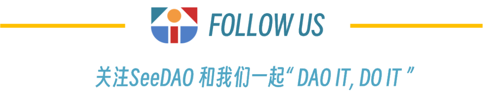

摘要：这是一篇关于 DAO 治理的实操文章。作者从 DAO 治理的三个经典问题着手，一一回答，引出一些优质的建议和经验。这三个问题是：如何更好地设计纳新机制？如何将普通成员转变为积极贡献者？如何建立贡献者的主人翁意识？
DAO 是由成员所有的社区，没有中心化领导。
DAO 具有自治性和透明度，因为智能合约设定了基本规则，执行达成共识的决策。诸如提案和投票之类的 DAO 活动均可公开审查。
因此，治理一个 DAO 的，是共同围绕项目未来做出关键决策的各个成员。这些关键决策包括技术升级，业务发展，以及资金分配等。
有效地协调这些去中心化社区中的成员，是成功运营一个 DAO 的最大挑战之一；这一关键职责落在了社区管理者的肩上。
尽管有了智能合约和数字平台的助力，社区管理者却仍然面临着各种挑战，即：围绕 DAO 的目标和使命对其成员进行协调。
本文旨在通过对三个问题的深入分析，来帮助应对 DAO 社区管理中的这些挑战：
如何更好地设计纳新机制，来帮助新成员了解某个 DAO？
如何将普通成员转变为积极的贡献者？
如何为 DAO 的贡献者创造机会，帮助他们建立主人翁意识？
很多 DAO 都没有考虑到，成员在加入的过程中，需要适当了解一个 DAO 组织。
许多 DAO 的纳新设计是这样的：
在 Twitter、Discord 或者 Newsletter 上，某位贡献者读到一个 DAO 的宣传文案或公告。
该贡献者跑到官网去阅读文档。然而，那些文档并未完整体现这个 DAO 的运营细节；有时甚至语焉不详难以理解。
接着，他填了一份表格，表明自己有意加入；还要提供一些用于评估此人是否适用的信息。
最后，他加入官方 Discord，开始正式参与其中。迎接他的将是海量的信息、公告，一堆正在进行中的提案，以及各种早已排好期、无助于他了解社区的活动。
这种纳新的基本流程缺乏效率，无法促进迎新。迎新需要让新成员了解社区背景，帮助他们融入社区。而上述流程基础、僵化，不是纳入新成员的最好方法。
虽然并没有什么设计优质纳新流程的完美规则，但仍然存在某些必须加以考虑的特征。
一个好的纳新流程应该：
帮助新成员了解 DAO 的宗旨和目标的相关背景
鼓励对话和主动性
减少碎片化信息
针对参与的便捷性来设计架构
在参与各类 DAO 的工作和互动中，我观察到一个经常出现的难题，那就是「背景知识构建」问题。
「背景知识构建」是指让新成员能够了解一个 DAO 的状况、各种活动和运作。基本上，也就是了解一个 DAO 「是什么」、「为什么」和「怎么样」，以及了解在这个 DAO 中如何行动。
适当地构建背景知识，对于各个成员采取必要行动、与 DAO 的目标、优先事项和重点领域保持一致是非常重要的。
为了让成员构建关于 DAO 的正确背景知识，他们必须：
了解 DAO 的关键目标、方向和运营方式。
能了解和勾勒出 DAO 的生态系统，即他们必须对 DAO 的市场环境、竞争对手、合作伙伴和潜在机遇有合理的了解。
知道如何参与并积极做出贡献。
虽然大多数 DAO 组织都可以快速且无门槛地加入，但是背景知识构建很费时间，而且通常需要社区成员和管理者付出大量的努力。为了真正了解社区，新成员需要进行适当的探究，而社区管理者必须确保这个探究学习的过程尽可能顺畅无间。
为了熟悉所处环境（在本例中，即指 DAO 社区），人类需要了解与其有关的背景知识。设计纳新流程时考虑到这一认知，是战胜挑战的关键。
要做到这一点，社区建设者应该:
在设计纳新流程时，为新成员重构导航、激活步骤和学习过程
优化出更短的学习曲线
建立一个组织良好、易于访问的知识库，以助力知识转移和背景构建。
大多数 DAO 组织遵循 1-9-90 规则。1% 的成员创造社区体验（这些是核心建设者），9% 的成员参与并积极为社区建设做出贡献，而其余 90% 的成员则是被动的，由潜水者和不活跃成员组成。
在 DAO 中，社区成员的积极参与跟 Web2 项目中的用户参与一样重要。
积极的参与支撑着组织的建设和扩展，最终帮助实现组织的目标和使命。
社区建设者一直都被这样一个问题纠缠：如何才能将普通成员转化为积极贡献者？
虽然目前这个问题没有万能的答案，但是一些最佳实践可以给我们提供帮助。
了解你理想中的社区成员
强大的 DAO 社区都高度关注其目标受众。Web3 的目标受众，通常可以按照经验水平来划分：
了解受众非常有必要，这是因为：
它有助于定义社区设计和建设的方法。
它有助于定制你的业务和社区体验，让成员轻松与 DAO 的使命保持一致。
它可以提供一个清晰的路径，让你设计满足特定需求的社区空间和活动。
它有助于建设者全面了解社区成员，提供一个用于改善社区的反馈环路。
鼓励积极贡献的行为
每个社区都有一些成员，他们比社区中的其他任何人都更活跃，给社区带来巨大的激情和能量。他们是社区的命脉，你要把这些人的福祉放在首位。
如前所述，大多数「数字至上」社区都遵循 1-9-90 规则。既然统计数据如此一边倒地指向「无作为」，我们有什么好的方法来激发更多的参与呢？
激发积极参与的最佳方法之一，是对活跃贡献者进行表彰。这会在社区内建立起一个有机的飞轮。活跃成员得到表彰，将激励更多的成员做出贡献、负起责任；于是又会涌现更多的活跃成员，飞轮将由此转起来。
吸引潜水者
尽可能让其他人参与起来更容易，或让他们感到更有吸引力（推荐话题，消除分歧，为参与进来的人庆贺，帮助他们解决问题）。
有许多因素会妨碍 DAO 中的潜水者变成积极贡献者，社区建设者的责任就是识别并消除这些障碍。
社区建设者必须想出新的方法，为潜水观望者和不活跃成员创造更多价值。同时，他们还必须让潜水观望者能更容易地参与、更轻松地从社区获得价值：
对社区的重大决策、热门话题和未来活动进行反复宣传。
提供便捷的社区知识库访问机制。这应该在新成员加入过程中就得到解决，因为便捷地访问社区知识库可以减少成员获取所需信息的阻碍。
设计出可以让积极贡献者从内部和外部双重受益的激励机制，把他们凸显出来，推动成员们采取行动。
持续征求关于如何改善整体社区体验的反馈。
大多数 DAO 都想要从一开始就达到去中心化、社区治理和积极贡献的状态。但实际上，只有贡献者在 DAO 内形成主人翁意识时，它才能实现。
培养贡献者间的主人翁意识，是留住主要贡献者和参与者的关键。
当贡献者为 DAO 投入了足够的时间、资源和精力时，他们就会产生一种主人翁意识，这使他们能够长期积极地做出贡献。社区建设者必须迅速创造土壤来维持这种主人翁意识。这可以通过以下方式来实现：
在社区的成员和贡献者中培养这种主人翁意识，是留住重要贡献者、培养更多积极贡献者的关键。
对于如何更好地设计和有效地建设去中心化社区，我们的理解仍处于早期阶段。
目前，在为 DAO 社区运营构建出更好的、新型的协调系统方面，正在开展大量的研究工作，也投入了大量的资金。
截至撰写本文时，仍然没有明确的赢家——没有任何一个 DAO 完全破解了去中心化社区建设的密码。
尽管如此，新解决方案的涌现还是令人兴奋的。这些解决方案将引领下一代社区建设者去创造一个更好的去中心化社区，从而完全满足 DAO 组织的需求。


